Na sprzedaż wyjątkowo zadbany egzemplarz Mazdy 6 w wersji kombi. To propozycja dla kogoś, kto szuka auta z pewną bezwypadkową historią, z najlepszym dostępnym silnikiem benzynowym i w topowej konfiguracji. Posiadam dla zainteresowanych raport autoDNA
Najważniejsze informacje:
• Silnik: 2.5L Benzyna (192 KM) – dynamiczny, bezawaryjny i ceniony za trwałość.
• I rejestracja listopad 2016
• Bezwypadkowy
• Jestem drugim właścicielem od nowości
• Skrzynia: Automatyczna (płynna i niezawodna).
• Pochodzenie: Polski salon.
• Serwis: Pełna historia wyłącznie w ASO do 2025 (potwierdzona dokumentacją) Od 2025 w zaprzyjaźnionym serwisie (posiadam faktury)
• Przebieg: 189 000 km (w pełni autentyczny, głównie autostradowy)
• Stan: Auto do 2025 garażowane, lakier Biała Perła w świetnej kondycji
• Piękna, jasna skórzana tapicerka
• Nagłośnienie Premium Bose
• Reflektory adaptacyjne LED
• Wyświetlacz Head-up
• Adaptacyjny tempomat
• System nawigacji satelitarnej
• Kamera cofania oraz czujniki parkowania przód/tył
• Podgrzewane przednie, tylnie fotele
• Elektrycznie regulowane fotele przednie z pamięcią ustawień
• System bezkluczykowy (Keyless Go)
• Bluetooth, USB,
• Android auto, Apple CarPlay
• Asystent pasa ruchu
Więcej informacji telefonicznie/na miejscu
Samochód nie wymaga żadnego wkładu finansowego. Sprzedaje tylko i wyłącznie dlatego, że potrzebuje większego samochodu. Zapraszam na oględziny w Zabrzu – to chyba jedyny taki egzemplarz Mazdy w takiej konfiguracji na OtoMoto.
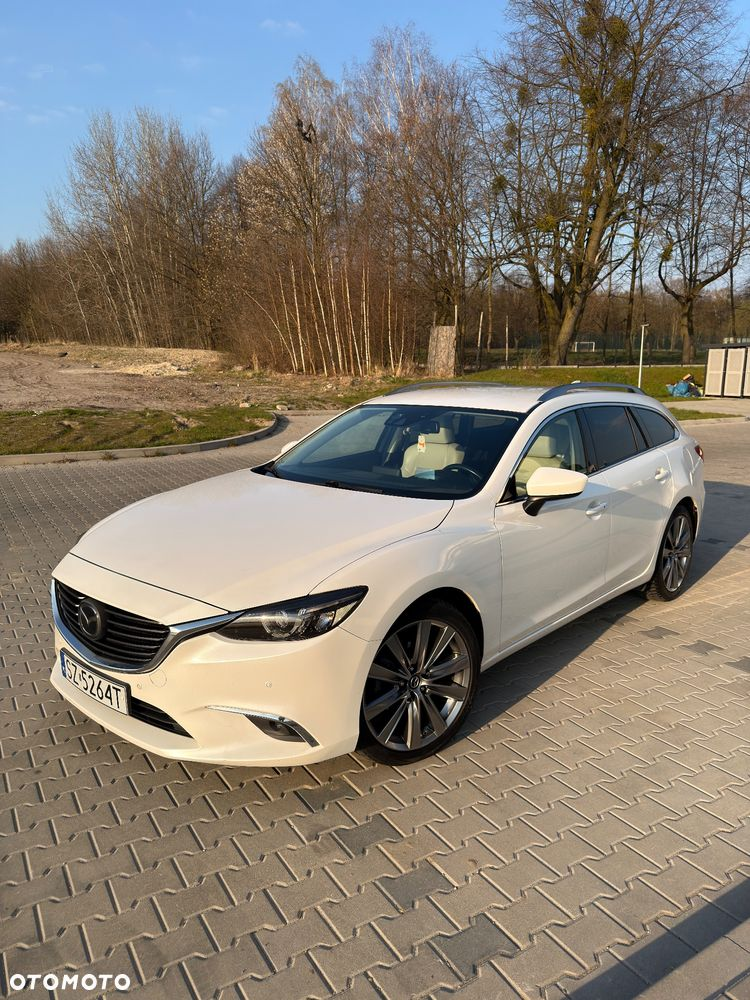
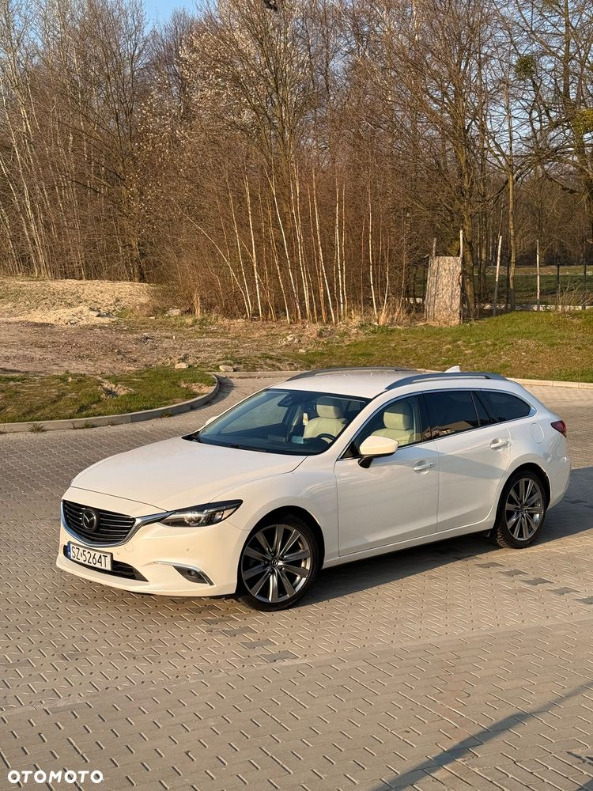
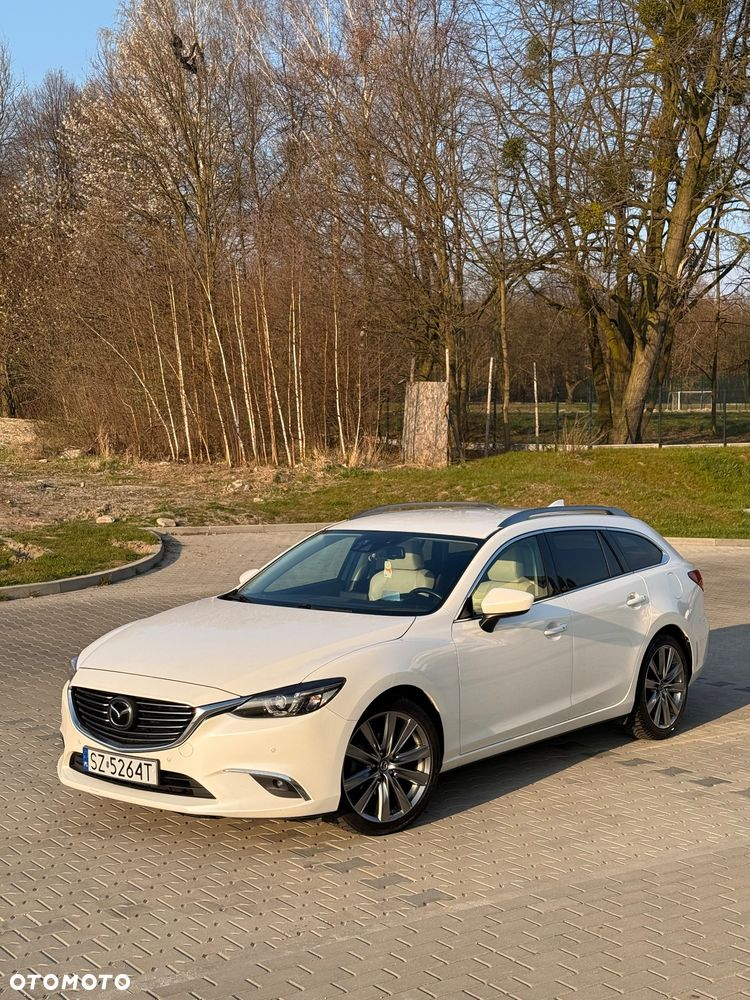
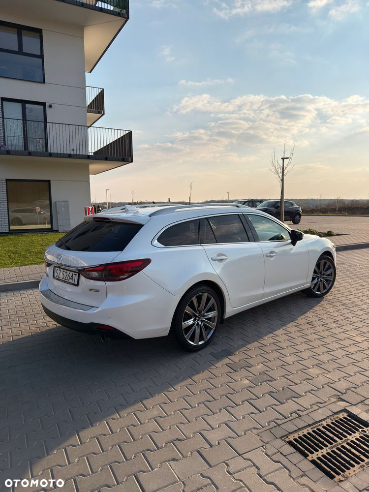
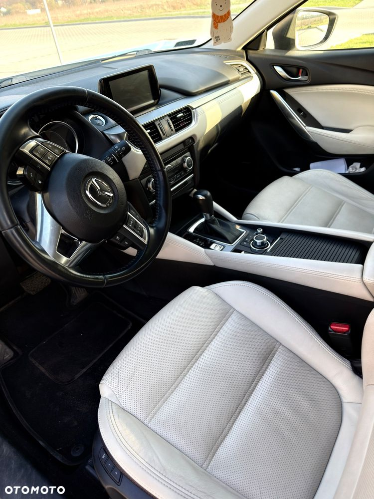
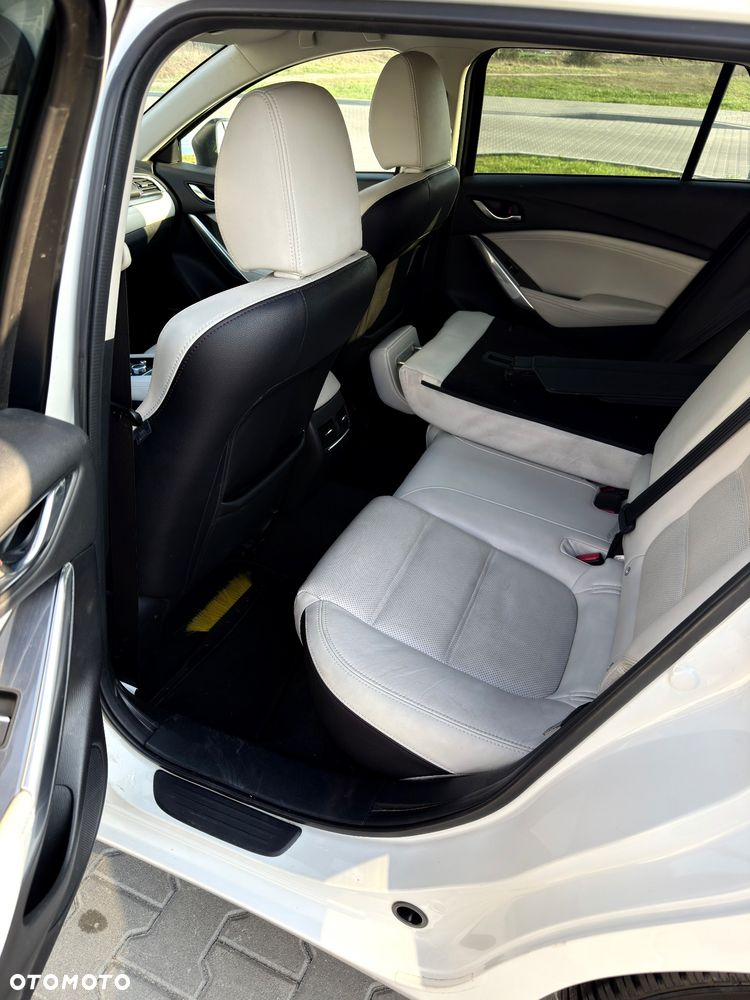
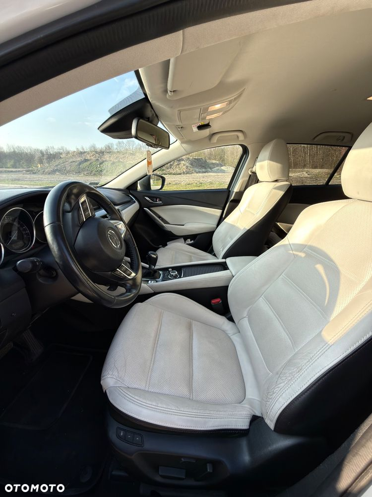
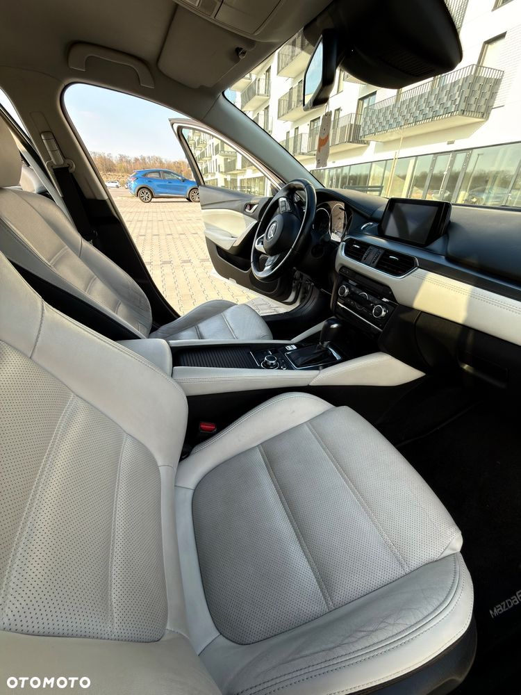
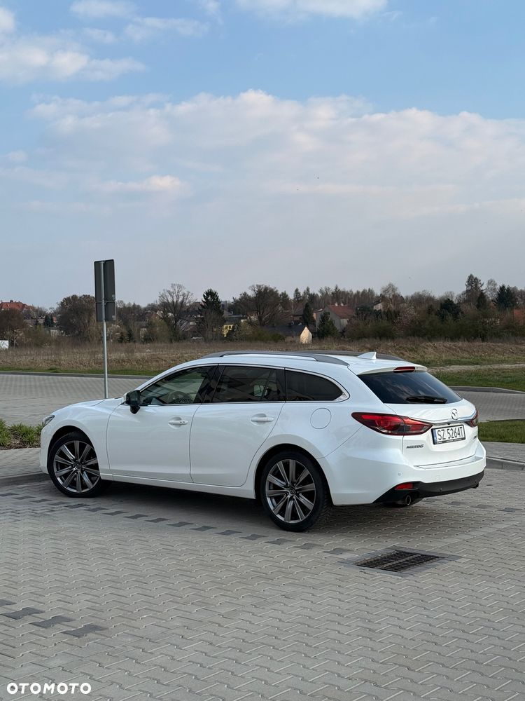
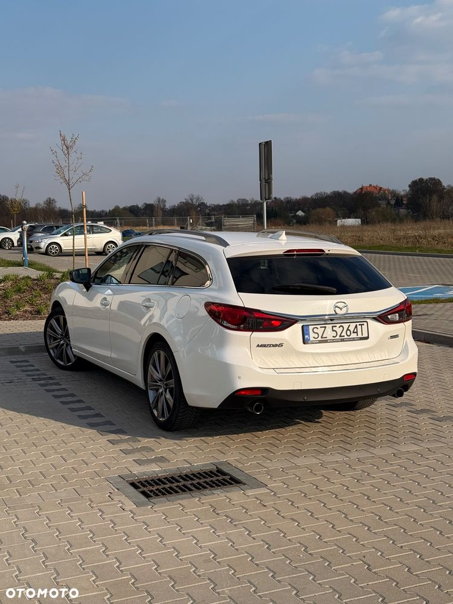
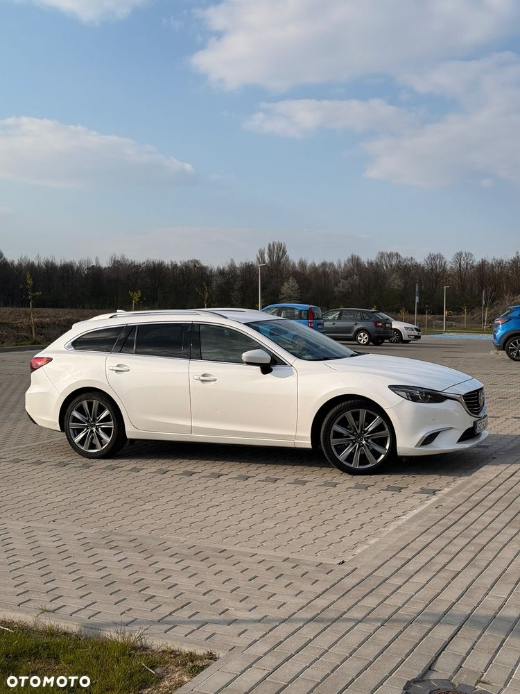
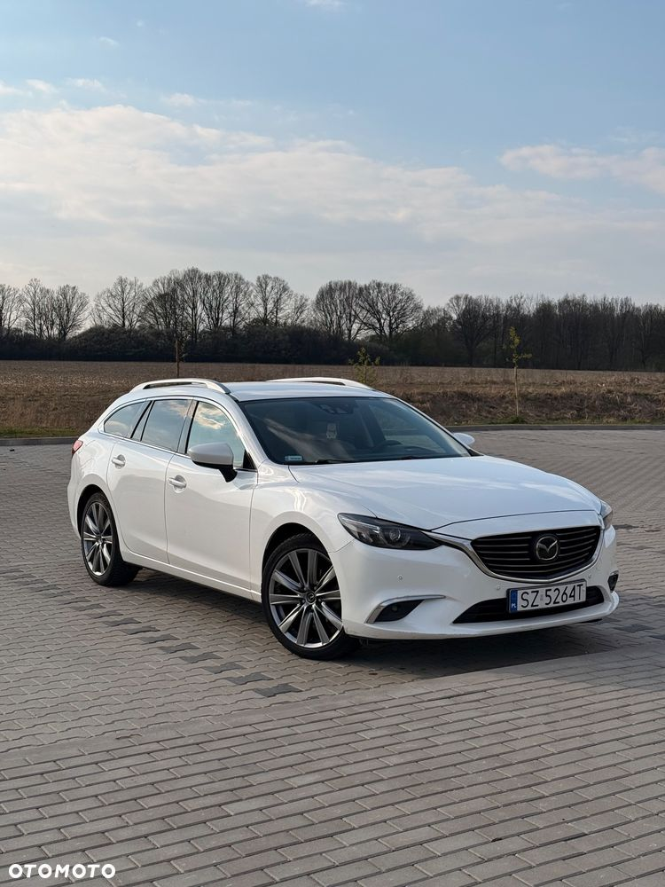
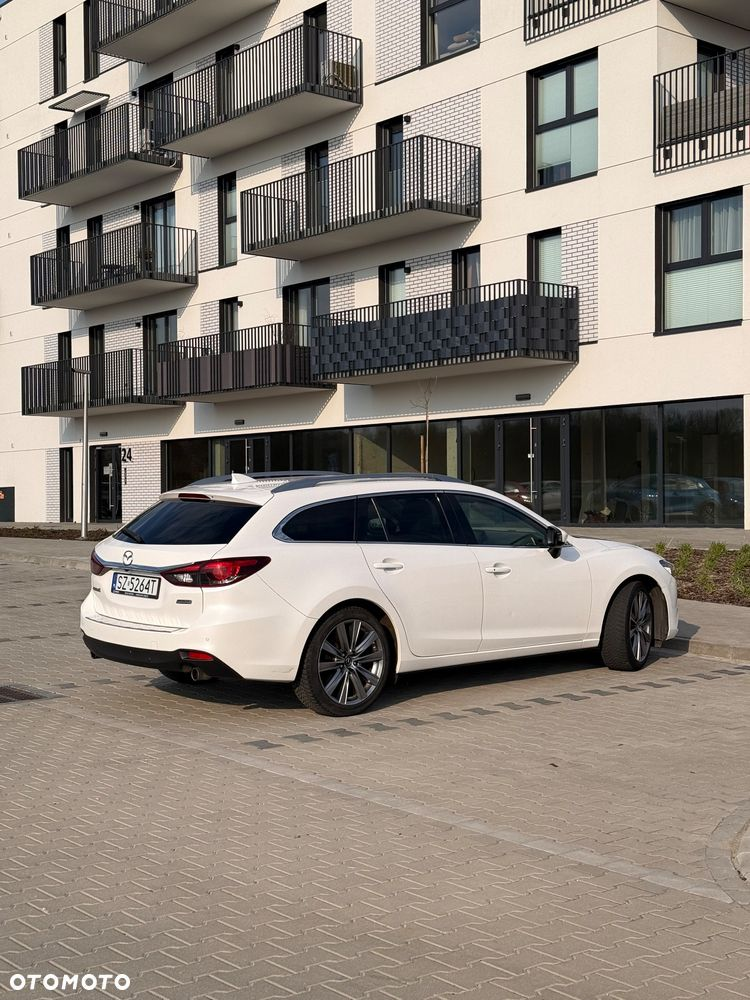
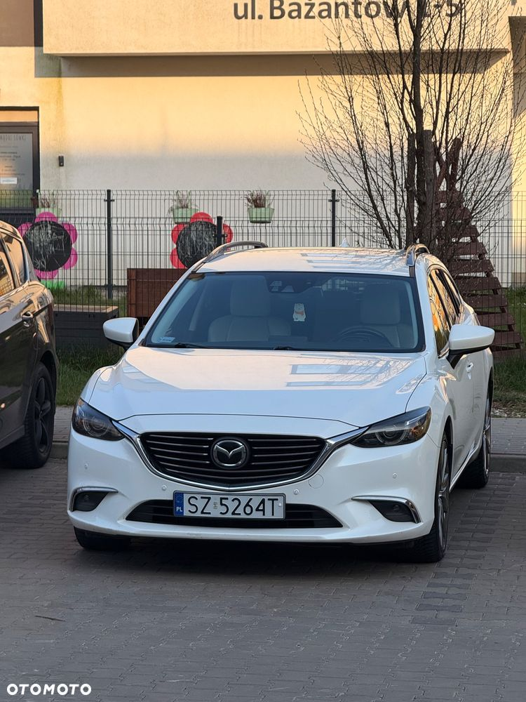